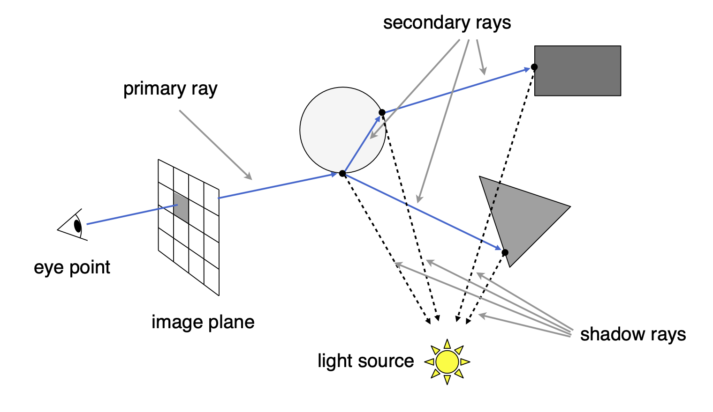
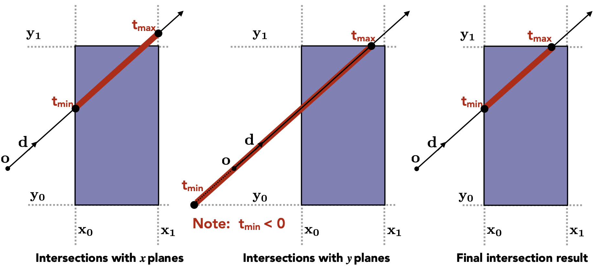
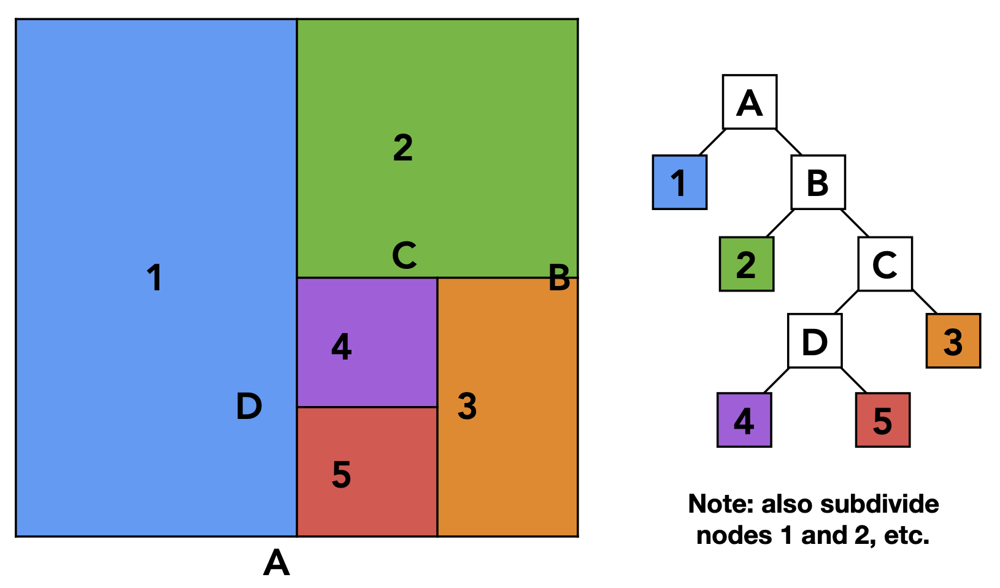
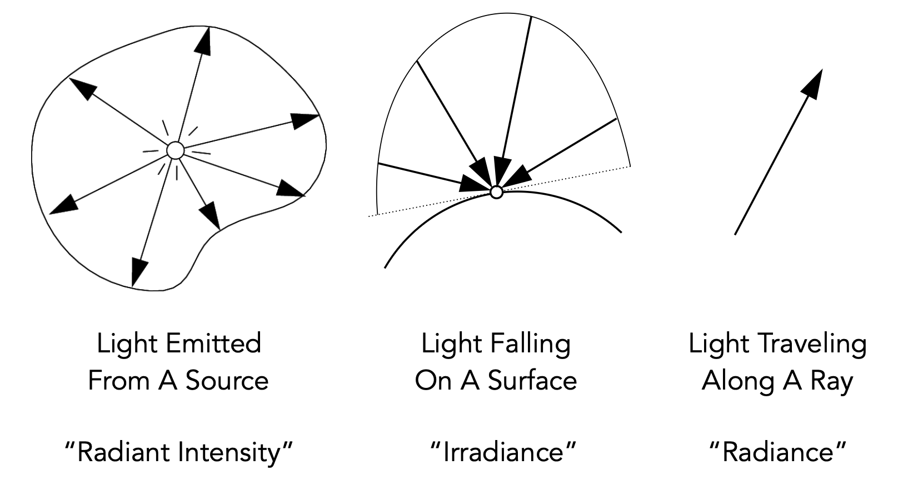
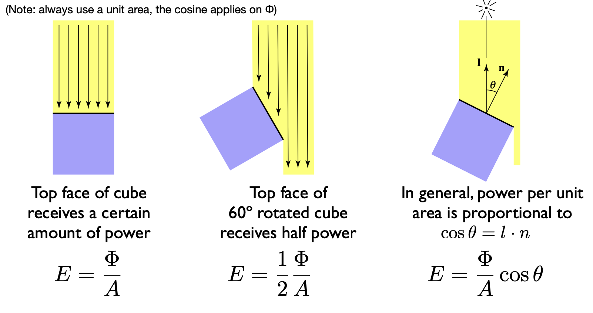

Ray Tracing¶
Whitted-Style Ray Tracing¶
Why Ray Tracing?¶
- Rasterization couldn't handle global effects well
- Rasterization is fast, but quality is relatively low
- Ray tracing is accurate, but is very slow
Basic Ray-Tracing Algorithm¶

Ray-Surface Intersection¶
Ray Equation¶
- \(\mathbf{r}\) : point along ray
- t : "time"
- \(\mathbf{o}\) : origin
- \(\mathbf{d}\) : (normalized) direction
Plane Equation¶
- \(\mathbf{p}\) : all points on plane
- \(\mathbf{p}'\) : one point on plane
- \(\mathbf{N}\) : normal vector
Ray Intersection With Plane¶
Check: \(0\leq t < \infty\)
Möller–Trumbore Algorithm¶
A faster approach, giving barycentric coordinate directly $$ \mathbf{O} + t\mathbf{D} = (1-b_1-b_2)\mathbf{P}_0 + b_1\mathbf{P}_1 + b_2\mathbf{P}_2 $$
where
- \(\mathbf{E}_1 = \mathbf{P}_1 - \mathbf{P}_0\) , \(\mathbf{E}_2 = \mathbf{P}_2 - \mathbf{P}_0\)
- \(\mathbf{S} = \mathbf{O} - \mathbf{P}_0\)
- \(\mathbf{S}_1 = \mathbf{D}\times \mathbf{E}_2\) , \(\mathbf{S}_2 = \mathbf{S}\times \mathbf{E}_1\)
Cost = (1 div, 27 mul, 17 add)
Bounding Volumes¶
Axis-Aligned Bounding Box(AABB)¶

\(t_{\text{enter}}=\max\{t_{\text{min}}\}\), \(t_{\text{exit}}=\min\{t_{\text{max}}\}\) $$ t=\frac{\mathbf{p}_x' - \mathbf{o}_x}{\mathbf{d}_x} $$
Using AABBs to accelerate ray tracing¶
Preprocess - Build Acceleration Grid¶
- Find bounding box
- Create grid
- Store each object in overlapping cells
Step through grid in ray traversal order
For each grid cell, test intersection with all objects stored at that cell
Grid Resolution¶
Heuristic:
- #cells = C * #objs
- \(C\approx 27\) in 3D
Spatial Partitions¶

KD-Tree Pre-Processing¶

Internal nodes store
- split axis: x-, y-, or z-axis
- split position: coordinate of split plane along axis
- children: pointers to child nodes
- No objects are stored in internal nodes
Leaf nodes store
- list of objects
Object Partitions & Bounding Volume Hierarchy (BVH)¶
Building BVH¶
- Find bounding box
- Recursively split set of objects in two subsets
- Recompute the bounding box of the subsets
- Stop when necessary
- Store objects in each leaf node

Internal nodes store
-
Bounding box
-
Children: pointers to child nodes
Leaf nodes store
-
Bounding box
-
List of objects
Nodes represent subset of primitives in scene
- All objects in subtree
BVH Traversal¶
Intersect(Ray ray, BVH node) {
if (ray misses node.bbox) return;
if (node is a leaf node) {
test intersection with all objs;
return closest iontersection;
}
hit1 = Intersect(ray, node.child1);
hit2 = Intersect(ray, node.child2);
return the closest of hit1, hit2;
}
Spatial vs Object Partitions¶
Spatial partition (e.g. KD-tree)
- Partition space into non-overlapping regions
- An object can be contained in multiple regions
Object partition (e.g. BVH)
- Partition set of objects into disjoint subsets
- Bounding boxes for each set may overlap in space
Basic Radiometry¶
Measurement system and units for illumination
Accurately measure the spatial properties of light
- Radiant flux, intensity, irradiance, radiance
Perform lighting calculations in a physically correct manner
Radiant Energy and Flux (Power)¶
Flux - #photons flowing through a sensor in unit time¶

Solid Angle¶
Definition: Ratio of subtended area on sphere to radius squared. $$ \Omega = \frac{A}{r^2} $$
Radiant Intensity¶
Definition: The radiant (luminous) intensity is the power per unit solid angle emitted by a point light source. $$ I(\omega)\equiv \frac{\text{d}\Phi}{\text{d}\omega}\ \left[ \frac{\text{W}}{\text{sr}} \right] \left[ \frac{\text{lm}}{\text{sr}} = \text{cd} = \text{candela} \right] $$
Irradiance¶
Definition: The irradiance is the power per projected unit area incident on a surface point. $$ E(\mathbf{x}) \equiv \frac{\text{d}\Phi(\mathbf{x})}{\text{d}A}\\ \left[ \frac{\text{W}}{\text{m}^2} \right] \left[ \frac{\text{lm}}{\text{m}^2} = \text{lux}\right] $$
Lambert's Cosine Law¶

Radiance¶
Definition: The radiance (luminance) is the power per unit solid angle per projected unit area. $$ L(\text{p},\omega) \equiv \frac{\text{d}^2\Phi(\text{p},\omega)}{\text{d}\omega\text{d}A\cos\theta} $$ Recall
- Irradiance: power per projected unit area
- Intensity: power per solid angle
So
- Radiance: Irradiance per solid angle
- Radiance: Intensity per projected unit area
Irradiance vs. Radiance¶
Irradiance: total power received by area \(\text{d}A\)
Radiance: power received by area \(\text{d}A\) from "direction" \(\text{d}\omega\)
Bidirectional Reflectance Distribution Function(BRDF)¶
BRDF¶
The BRDF represents how much light is reflected into each outgoing direction \(\omega_r\) from each incoming direction $$ f_r(\omega_i\to \omega_r) = \frac{\text{d}L_r(\omega_r)}{\text{d}E_i(\omega_i)} = \frac{\text{d}L_r(\omega_r)}{L_i(\omega_i)\cos\theta_i\text{d}\omega_i} \begin{bmatrix} 1\newline \text{sr} \end{bmatrix} $$
The Reflection Equation¶
 $$
L_r(\text{p},\omega_r) = \int_{H^2} f_r(\text{p},\omega_i\to\omega_r)L_i(\text{p},\omega_i)\cos\theta_i\text{d}\omega_i
$$
Adding an Emission term to make it general:
$$
L_o(\text{p},\omega_o) = L_e(\text{p},\omega_o) + \int_{\Omega^+}L_i(\text{p},\omega_i) f_r(\text{p},\omega_i, \omega_o)(n\cdot \omega_i)\text{d}\omega_i
$$
Note: now, we assume that all directions are pointing outwards!
$$
L_r(\text{p},\omega_r) = \int_{H^2} f_r(\text{p},\omega_i\to\omega_r)L_i(\text{p},\omega_i)\cos\theta_i\text{d}\omega_i
$$
Adding an Emission term to make it general:
$$
L_o(\text{p},\omega_o) = L_e(\text{p},\omega_o) + \int_{\Omega^+}L_i(\text{p},\omega_i) f_r(\text{p},\omega_i, \omega_o)(n\cdot \omega_i)\text{d}\omega_i
$$
Note: now, we assume that all directions are pointing outwards!
Understanding the Rendering Equation¶
Linear Operator Equation¶
Path Tracing¶
Problem¶
-
Where should the ray be reflected for glossy materials?
-
No reflections between diffuse materials?
A Simple Monte Carlo Solution¶
Compute the radiance at \(p\) towards the camera
Monte Carlo Integration: \(\displaystyle \int f(x)\text{d}x = \frac{1}{N} \sum_{i=1}^N\frac{f(X_i)}{p(X_i)}\quad X_i\sim p(x)\)
"\(f(x)\)": \(L_i(\text{p},\omega_i) f_r(\text{p},\omega_i, \omega_o)(n\cdot \omega_i)\)
PDF: \(p(\omega_i)=1/2\pi\) (assume uniformly sampling the hemisphere)
Introducing Global Illumination¶
What if a ray hits an object? The direct illumination at the object!
Sampling the Light¶
\(\displaystyle \text{d}\omega = \frac{\text{d}\cos \theta'}{\|x'-x\|^2}\)
Now we consider the radiance coming from two parts:
-
light source (direct, no need to have RR)
-
other reflectors (indirect, RR)
shade(p, wo)
// Contribution from the light source.
Uniformly sample the light at x’ (pdf_light = 1 / A)
Shoot a ray from p to x'
if the ray is not blocked in the middle
L_dir = L_i * f_r * cos θ * cos θ' / |x' - p| ^2 / pdf_light
// Contribution from other reflectors.
L_indir = 0.0
Test Russian Roulette with probability P_RR
Uniformly sample the hemisphere toward wi (pdf_hemi = 1 / 2pi)
Trace a ray r(p, wi)
if ray r hit a non-emitting object at q
L_indir = shade(q, -wi) * f_r * cos θ / pdf_hemi / P_RR
return L_dir + L_indir
Core Code¶
Vector3f Scene::castRay(const Ray &ray, int depth) const {
if (depth > maxDepth) {
return Vector3f(0.0f);
}
Intersection inter = intersect(ray);
if (!inter.happened) {
return Vector3f(0.0f);
}
if (inter.m->hasEmission()) {
return inter.m->getEmission();
}
Vector3f hitPoint = inter.coords;
Vector3f N = inter.normal;
Vector3f L_dir(0.0f);
Intersection lightInter;
float pdf_light = 0.0f;
sampleLight(lightInter, pdf_light);
Vector3f x = lightInter.coords;
Vector3f ws = (x - hitPoint).normalized();
Vector3f NN = lightInter.normal;
Ray shadowRay(hitPoint, ws);
Intersection shadowInter = intersect(shadowRay);
if (shadowInter.distance - (x - hitPoint).norm() > -0.005f) {
L_dir = lightInter.emit * inter.m->eval(ray.direction, ws, N) * dotProduct(ws, N) * dotProduct(-ws, NN) / dotProduct(x - hitPoint, x - hitPoint) / pdf_light;
}
Vector3f L_indir(0.0f);
if (get_random_float() < RussianRoulette) {
Vector3f wi = inter.m->sample(ray.direction, N).normalized();
Ray reflectionRay(hitPoint, wi);
Intersection reflectionInter = intersect(reflectionRay);
if (reflectionInter.happened && !reflectionInter.m->hasEmission()) {
float pdf_bsdf = inter.m->pdf(ray.direction, wi, N);
if (pdf_bsdf > 0) {
L_indir = castRay(reflectionRay, depth + 1) * inter.m->eval(ray.direction, wi, N) * dotProduct(wi, N) / pdf_bsdf / RussianRoulette;
}
}
}
return L_dir + L_indir;
}